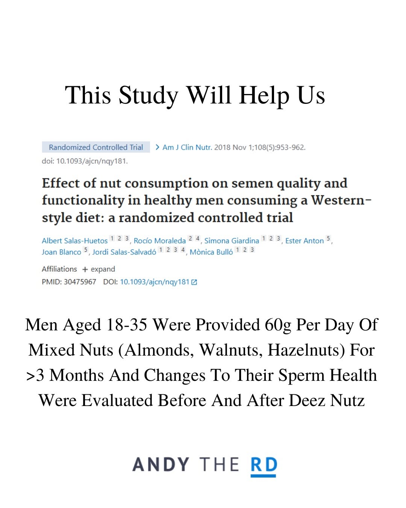
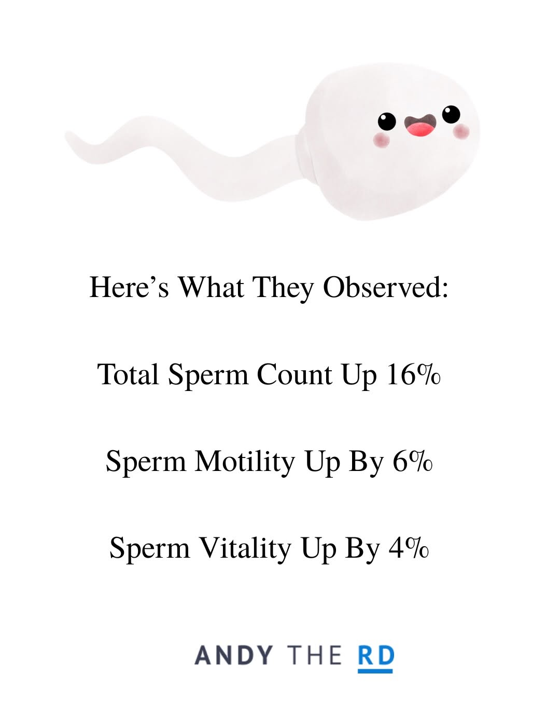
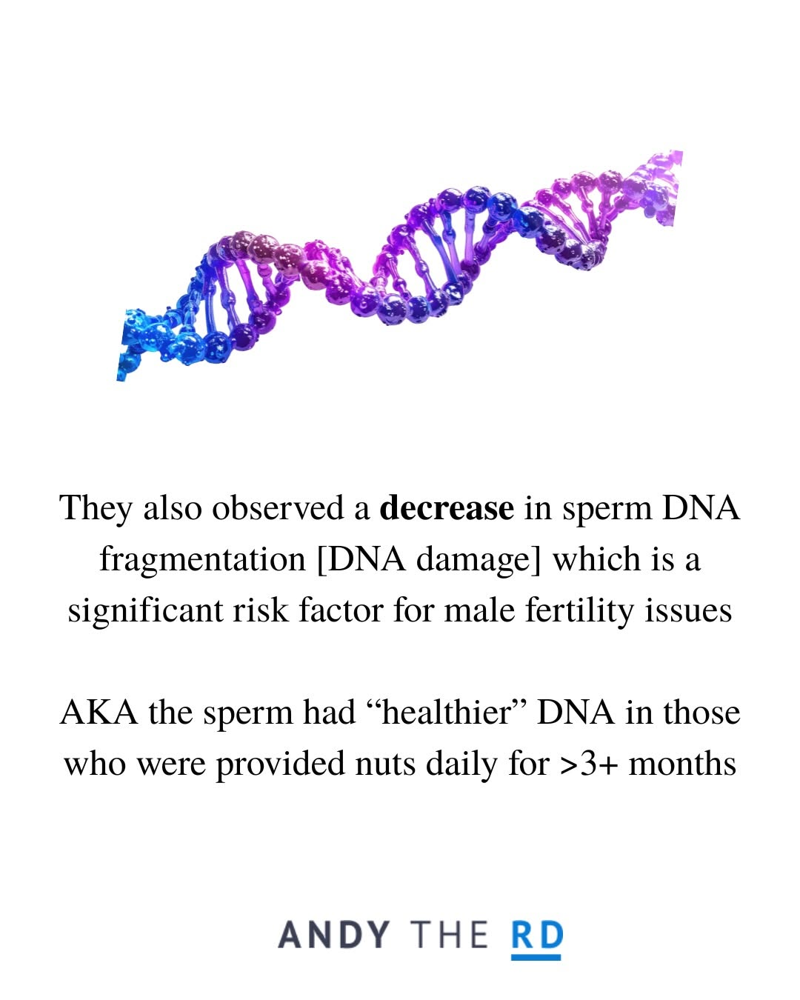
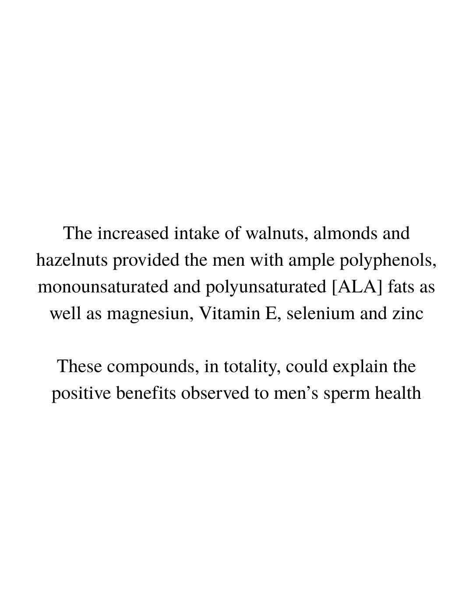

Nuts improve male fertility.
This result is from the FERTINUTS randomized trial.
Louis shares a dietitian's graphic and notes the result comes from the FERTINUTS randomized trial, which found that nuts improved male fertility. The post contains no numbers or details.
Nuts improve male fertility.
This result is from the FERTINUTS randomized trial.
You’d have to be 🥜s to make this 💩🆙.
#malefertility #mensnutrition #fertilitynutrition #fertilitydiet #dietitianapproved





Louis shares a news article reporting that eating peanuts daily may boost memory and protect brain power with age. Hashtags point to insulin resistance and arginine as proposed mechanisms. The post itself gives no study details.

A Maastricht randomized crossover trial of 31 adults aged 60-75 found 60 g of peanuts daily for 16 weeks raised cerebral blood flow 3.6%, verbal memory 5.8%, and lowered systolic BP 5 mmHg.
Louis shares two randomized trials of peanut butter. In 120 older adults at fall risk, 43 g/day for six months improved sit-to-stand speed and muscle power without changing weight; a separate 6-month trial in young adults (ARISTOTLE) found better memory and stress response.

Louis shares a Clinical Nutrition study in which a daily 60 g serving of skin-roasted peanuts improved global brain blood flow by about 4% in older adults, roughly the decline seen over 10 years of aging. He suggests arginine-driven nitric oxide as the mechanism, and nuts as slow-release arginine that may also help heart health.
Louis quotes Harvard's Nutrition Source on large cohort studies, including the Adventist, Iowa Women's, Nurses' Health and Physicians' Health studies, which consistently link regular nut intake to lower risk of heart attack, sudden cardiac death and CVD.
Ranks interventions for regressing or stabilizing atherosclerotic plaque. Statins, PCSK9 inhibitors and ezetimibe have the strongest trial evidence, with high-dose EPA and pioglitazone fairly good; colchicine, aged garlic, Centella, pine bark, nattokinase and plant-based diets are promising but need rigorous imaging RCTs, and evidence for exercise, L-arginine and vitamin K2 is limited.